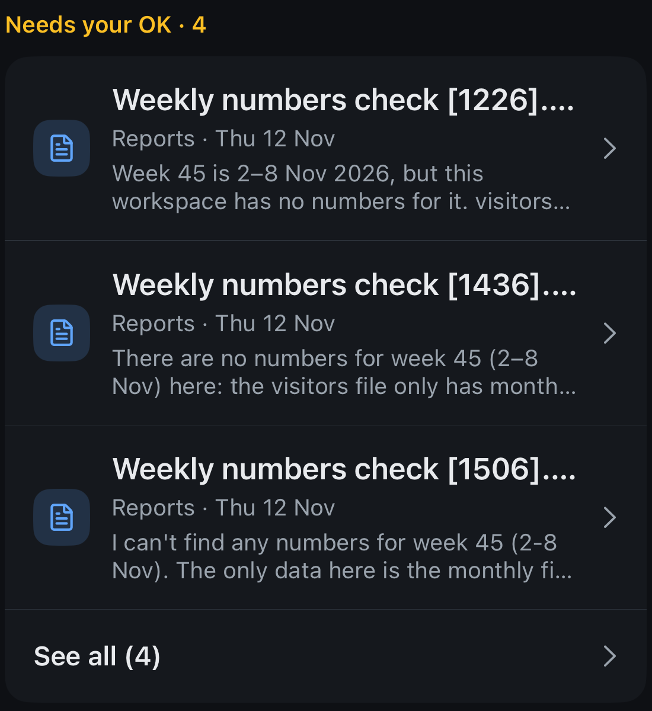
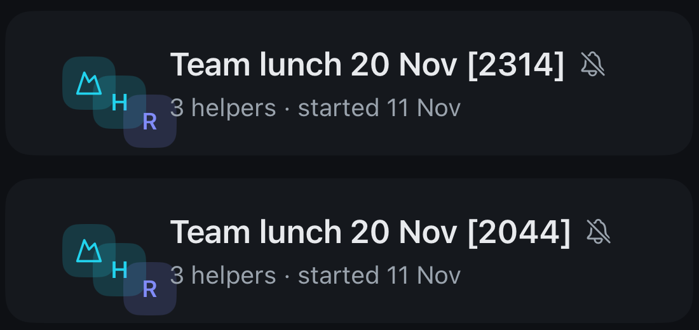
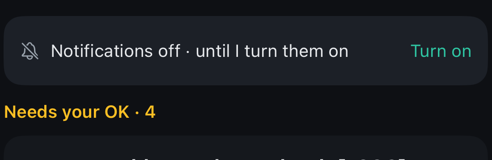

Your five phone points from the TestFlight test (build 261113.120909). Each one shows today and the proposal. The phones are clickable: swipe a question, tap the mute switch, and run the new-topic flow.
A Swipe away “Needs your OK” Built
“let me swipe away needs you messages”
Swipe a question to the left to hide it from the top of Chats. A long swipe hides it at once. A short swipe shows the Hide button.
Hiding only tidies the list. The question stays open in its chat, the workspace row still says “4 questions”, and the helper keeps waiting.
Undo shows for 5 seconds. The question comes back on its own when the helper writes in it again. The “Needs your OK” tab lists hidden ones under “Hidden (n)”.
Not proposed: “Answer later” with a time. That would add a second choice and a timer, and hiding already covers it.
Now · your screenshot

Proposal · try it: drag a row left
Proposal · “Needs your OK” tab after hiding one
B Group logo centred Built
“the groups "logo" is not centered correctly”
Cause: the three small logos are moved with an offset. Offsets do not change the space a view takes up, so the stack sits too far right and spills below the row (GroupViews.swift:196-201).
Fix: the stack fits in the same 46 × 46 box as a workspace logo. It is centred in the row and lines up with the workspace rows above. The three small logos sit as a small triangle (two on top, one below) so none covers another and every letter stays readable. More than three members: the third spot shows “+2”.
Now · your screenshot

Proposal ·
C Taps feel laggy Accepted, building
“clicking in the app is really laggy can we improve the performance and make it feel less laggy”
Main cause found in the code: the chat list and each chat rebuild all conversations from all messages, several times on every redraw (AppModel.swift:515-521, ChatScreens.swift:159-173). This happens on every tap that opens a screen.
Also: date formatters are created per row, each row and each logo runs its own minute clock, an open chat redraws completely every 15 s, photos decode on the main thread, and every send writes the whole outbox to disk.
Plan: measure first (Instruments plus timing marks), cache the list data once per change, then fix the formatters, clocks, photo decoding and disk writes. Goal: no visible delay between a tap and the next screen.
Full plan with file:line: PERF-PLAN in the draft folder (shown on the decision page).
D Only “Mute all” Built
“i dont understnad why there is a button mute all + notifications can we not just keep mute all”
Today Settings has two switches that sound alike. “Mute all” at the top silences orch for a while. “Notifications” under Preferences asks iPhone for permission.
Proposal: keep only Mute all. Turning it on asks for how long (1 hour, until tomorrow 08:00, until I unmute). The line under it says what you get: questions and finished work.
iPhone permission is asked once when you pair a workspace. If it is off in iPhone Settings, a yellow note appears with “Open iPhone Settings”, and nothing else.
The Chats banner uses the same words: “Muted until tomorrow 08:00 · Unmute”.
Now · Settings (two switches)
Proposal · try the switch
Now · your Chats banner

Proposal · banner and iPhone-off note
E New topic, hands busy Accepted, building
“adding a new topic must feel more smooth … i open new topic and get a big microphone option or add picture options as default … the user can e.g. drive a car and dont have to finger around a lot just big buttons select a new voice input, select the workspace and go”
Variant 1 (recommended): Big buttons. + opens one screen: workspace tiles at the top (last used already picked), a huge microphone in the middle, Photo and Camera at the bottom. Tap the mic, talk, tap Send. That is 3 taps, with no keyboard and nothing to read.
Variant 2: Records at once. + starts recording straight away to the last used workspace, with one big Send button. That is 2 taps, but every + starts a recording, including accidental ones. It already exists as a setting (“autoMic”), so Variant 1 becomes the default and Variant 2 stays the option.
After Send: the phone says “Sent to Reports”, buzzes once, and shows Undo for 5 seconds, so you never need to look. Cancel sits well below Send, so a miss does not throw the message away.
No live transcript while recording: only a timer and a level bar, nothing to read. The text appears in the chat after sending. Every button is at least 60 pt. The keyboard only opens with “Type instead”.
iOS safety: Apple’s driving rules allow voice and short glances, not reading or typing. The fully hands-free route is Siri (“Hey Siri, new orch topic for Reports”) and later CarPlay. The same goes for an Action button shortcut and a Lock Screen button that opens straight into recording. These are follow-ups, not part of this draft.
Variant 1 · try it: pick, talk, send
Variant 1 · More… opens big tiles
Variant 2 · records at once
Now · New topic today: small “To:” pill, keyboard opens, small mic